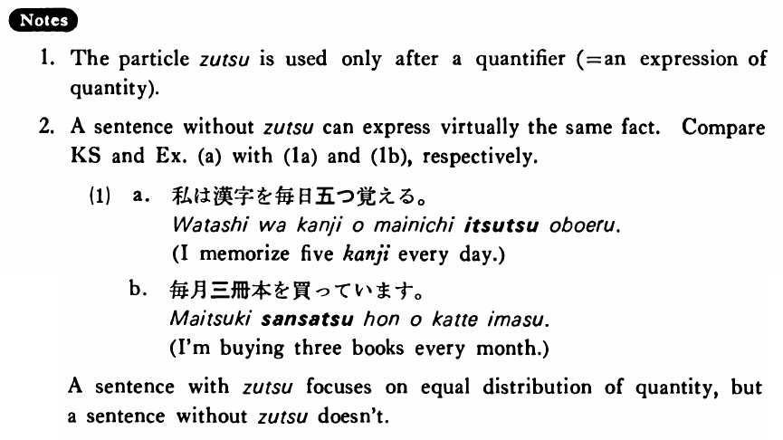

ずつ (B. 572)
- (ks).
- 私は漢字を毎日五つずつ覚える・覚えます。
- I memorize five kanji every day.
- (a).
- 毎月三冊ずつ本を買っています。
- I'm buying three books per month.
- (b).
- ゴルフが少しずつ上手になって来た。
- I have become a better golfer bit by bit.
- (c).
- 私は子供達に本を二冊ずつやった。
- I gave two books to each of the children.
- (d).
- どのクラスにも女子学生が六人ずついた。
- There were six girl students in each class.
